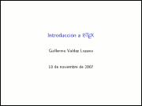
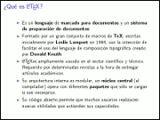
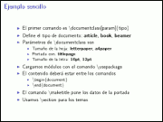

Colección de ideas.
2007-11-12 13:00 - guivaloz
  
Como tema de la catorceava reunión del Grupo de Usuarios de GNU/Linux de La Laguna preparé esta sencilla introducción al LaTeX. LaTeX es un lenguaje de marcado para documentos y un sistema de preparación de documentos, el cual es ampliamente usado en el sector científico y académico.